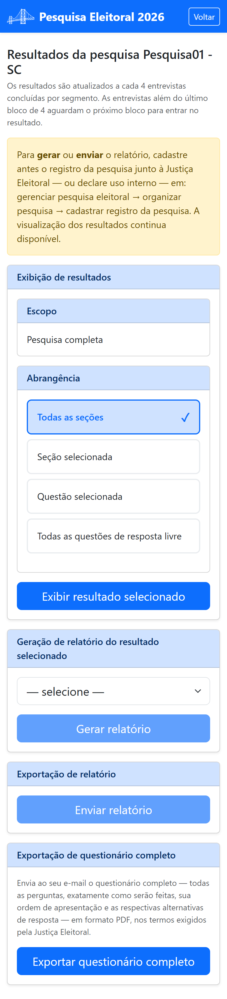
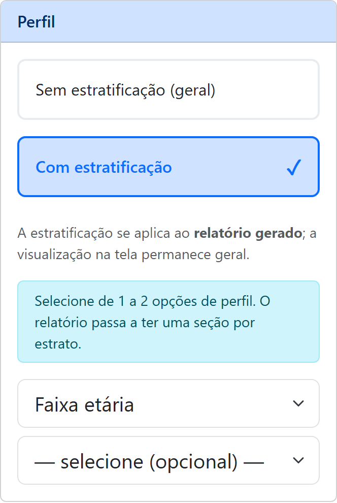

Parte 3 — Modo de operação
12. Resultados e relatórios
Em Ver resultados você acompanha a pesquisa, gera relatórios e exporta o questionário completo. Os resultados vão sendo atualizados à medida que novas entrevistas são enviadas.

12.1 Escolher o que exibir
Você define três recortes e toca em Exibir resultado selecionado:
- Escopo — Pesquisa completa ou, se houver segmentos, Segmento selecionado;
- Abrangência — Todas as seções, Todas as questões de resposta livre, Seção selecionada ou Questão selecionada;
- Perfil — Sem estratificação (geral) ou Com estratificação (veja a seguir).
Perfil: resultados por estrato
Por padrão, o resultado é geral: uma única apuração, com todos os entrevistados juntos. Escolhendo Com estratificação, você pede que a apuração seja repetida separadamente para cada grupo de entrevistados — cada estrato. Escolha um ou dois perfis entre:

- Sexo / identidade de gênero;
- Faixa etária;
- Faixa de renda;
- Escolaridade;
- Religião.
Com dois perfis, os estratos combinam os dois — por exemplo, faixa etária e escolaridade produzem “25 a 34 anos com ensino médio”, “25 a 34 anos com ensino superior”, e assim por diante. Cada estrato traz a sua própria base: quantas entrevistas o compõem e que percentual representam do total, para você saber o peso de cada recorte.
A estratificação vale para o relatório gerado (§12.2), e não para o resultado exibido na tela. Quem preferiu não responder ao perfil não forma estrato, e o cabeçalho do relatório informa quantos entrevistados ficaram de fora.
Duas coisas mudam quando você estratifica: a Abrangência passa a exigir uma seção ou uma questão — “todas as seções” e “todas as questões de resposta livre” produziriam um documento grande demais —, e as questões que definem os perfis escolhidos saem da lista, pois elas já são o recorte.
12.2 Gerar e enviar relatório
No cartão de relatório, escolha o formato (PDF ou Rich Text — RTF) e toque em Gerar relatório. Em seguida, Enviar relatório manda o documento para o e-mail do usuário ativo.
12.3 Exportar o questionário completo
O botão Exportar questionário completo envia ao seu e-mail, em PDF, todas as perguntas exatamente como serão feitas, na ordem de apresentação e com as respectivas alternativas de resposta.
Esta funcionalidade só fica disponível após você autorizar o início da pesquisa — momento a partir do qual o questionário não pode mais ser alterado (veja §10 e §11).